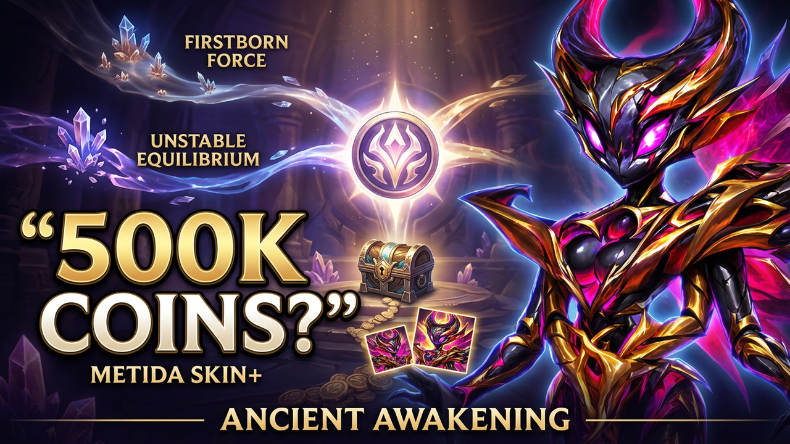

Day After Day
Log in across all seven event days. Each daily login awards 300 Event Coins, alongside Titan Skin Stones.
2,100 Event Coins totalMetida's seven-day launch event connects Firstborn Force and Unstable Equilibrium through eight tabs, additional Event Coin rewards, and the path toward her Primordial Skin and Skin+.

Ancient Awakening is the third subevent in Metida's launch event. Some rewards come from normal participation, while others depend on repeatable objectives, resource spending, troop losses, chest openings, or progress made in the two connected subevents. The numbers below therefore separate practical participation from conditional maximums.
Log in across all seven event days. Each daily login awards 300 Event Coins, alongside Titan Skin Stones.
2,100 Event Coins totalLose level-six troops across seven milestones ranging from 2,500 to 52,000 troops lost. The tab can be completed again after finishing a walkthrough.
5,300 Event Coins per walkthroughTracks cumulative Event Coins spent in the Event Shop from 1,500 up to 400,000. These are spending thresholds, not values to add together. The tab does not directly award additional Event Coins.
0 direct Event CoinsOpen Heroic Chests through milestones from 1 to 100. A complete walkthrough can be repeated. Two free Heroic Chests per day provide 14 openings over seven days, reaching 1,500 Event Coins from the early milestones.
8,500 Event Coins per full walkthroughOpen Outland Chests through 150 openings. All eleven milestones form one complete walkthrough, after which the tab resets.
6,675 Event Coins per walkthroughStart Expeditions through eight milestones, from 6 to 56. Starting eight Expeditions each day across seven days reaches the final milestone. Adventure Energy from this tab also advances the Buried Truths Season Adventure.
7,600 Event Coins totalCounts quests completed in Firstborn Force. Sixteen milestones run from 10 to 370 completed quests and provide additional rewards on top of the rewards earned from the original Firstborn Force quests.
Up to 82,850 additional Event CoinsCounts quests completed in Unstable Equilibrium, with milestones from 5 through 80 completed quests. At 63 quests, the standout reward is Rigel – Biomech Skin.
Up to 100,250 Event CoinsCounting each repeatable tab once and completing every milestone shown produces the following theoretical Ancient Awakening total.
Firstborn Force's figure includes 176,750 Event Coins from VIP. Unstable Equilibrium includes VIP, Emerald spending, additional battles, and heavy resource milestones. Ancient Awakening counts each repeatable tab once. The combined figure is therefore a theoretical maximum under the stated conditions, not an ordinary player's expected income.
Seven Firstborn Force logins provide 2,100 Event Coins. Seven Unstable Equilibrium logins plus 35 free attempts in each Arena provide 6,800. Ancient Awakening's seven logins, 56 Expeditions, and the milestones reached with 14 free Heroic Chests provide 11,200.
This is a conservative participation example, not a ceiling. Players using saved resources or completing more Firstborn Force quests can unlock additional connector milestones.
This scenario assumes every Firstborn Force milestone except VIP is completed. That produces 235,550 Event Coins. Completing its assumed Firstborn quest count also reaches all Titan's Roar milestones, adding 82,850.
Under the 55% Outland Chest discount used in this scenario, a pack of 100 chests costs 3,375 Emeralds. The calculation uses only these 100-chest packs.
Ancient Awakening rewards coordinated progress rather than isolated spending. Firstborn Force and Unstable Equilibrium feed additional rewards into Titan's Roar and Elemental Tempest, while the repeatable chest tabs can substantially change individual totals. Set the milestones your account can realistically support, then spend Event Coins with intention.
Watch the full breakdown for the complete explanation of the eight tabs, connected subevents, Event Coin calculations, and the Metida Skin+ scenario.